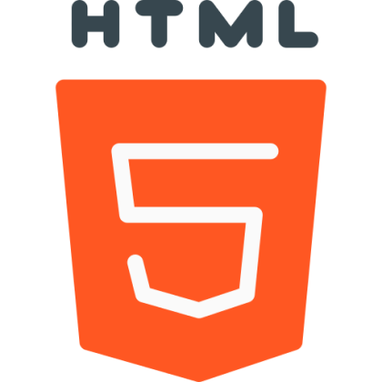
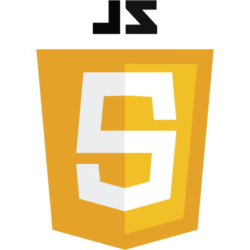
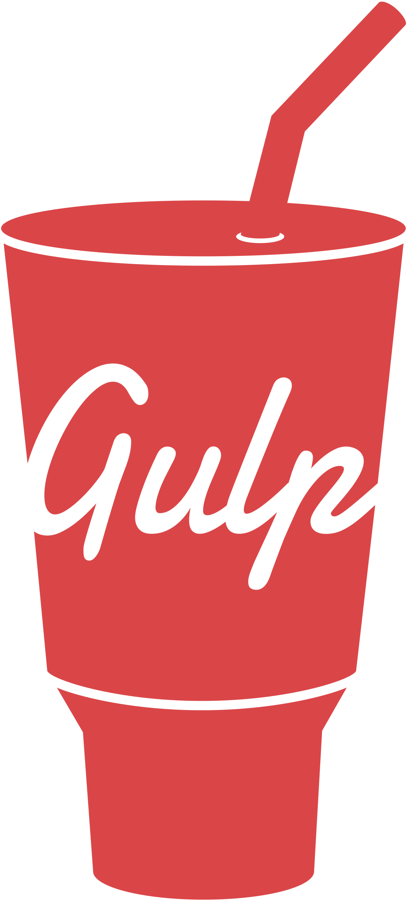
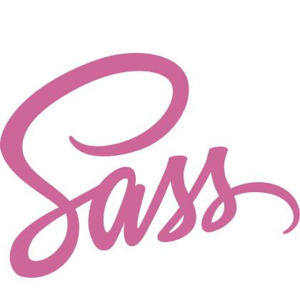
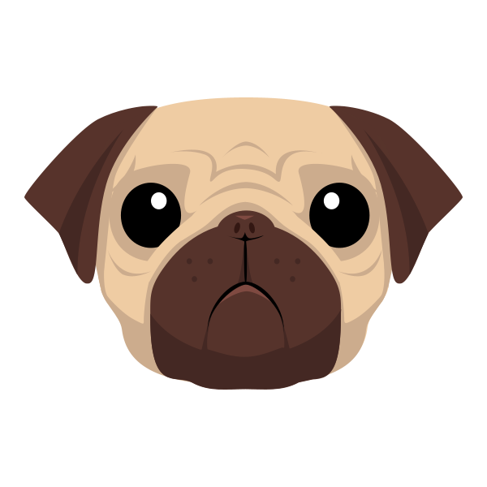
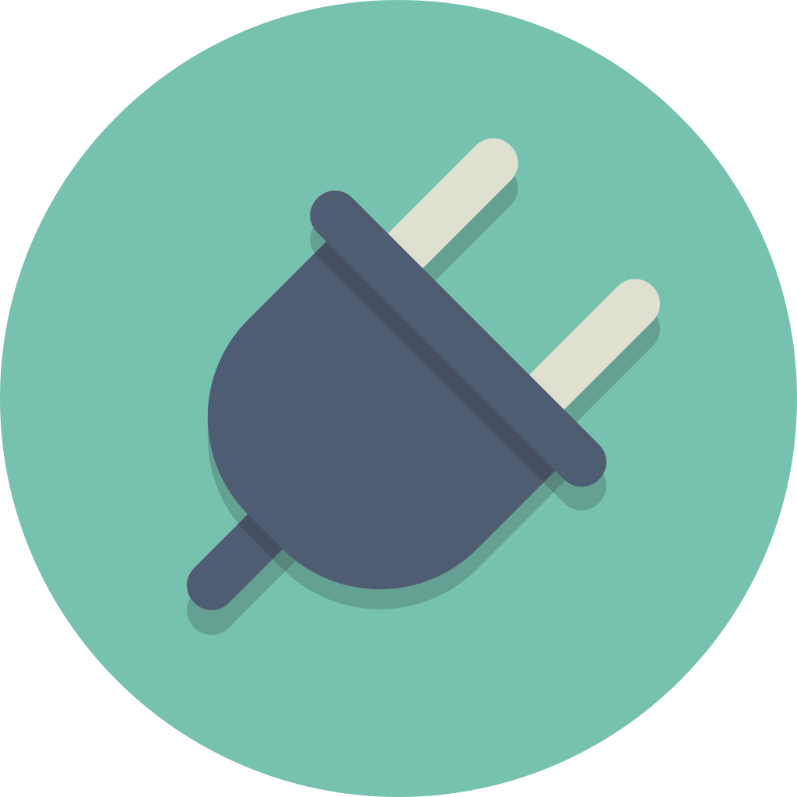

Про мене
Додатково
Навички:
- Адаптивна верстка під любий розмір екрану
- Розуміння валідної, семантично-оптимізованої верстки
- Основи JavaScript, jQuery
- Використання та налаштування разноманітних JS/JQ плагінів
- Використання, додавання та видалення плагінів Gulp
- Використання Git
- Вміння та досвід використання препроцессорів SASS, SCSS, Jade/PUG
Сертифікат про закінчення курсів

Хрестики-нолики на JavaScript
Технології які я використовую

HTML5
Саме він створює каркас вашого сайту або додатку, а пьята версія дозволить мені створювати більш SEO-оптимізовану структуру вашого продукту

CSS3
Ця мова стилів дозволяє мені створювати абсолютно любий зовнішній вигляд вашого сайту або додатку. Все обмежується тільки вашою фантазією

JavaScript
Ця мова програмування дозволяє оживити все що завгодно: слайдери, вікна, підсказки, вкладки, отримання данних від сервера та багато іншого
jQuery
За допомогою бібліотеки jQuery можна виконувати найбільш використовуванні дії з сайтом, наприклад - взаємодія з модальними вікнами, меню, табами, кнопками і так далі, але в більш коротшому вигляді ніж в JavaScript
Інструменти які допомогають в створенні сайтів
Методологія БЕМ
При написанні сайту я притримуюсь методології БЕМ, що позволяє простіше і бистріше в майбутньому працювати з кодом сайту, та в тому випадку якщо через якийсь час прийдеться повернутися до коду сайта, буде зрозуміліше вносити корекції до проекту

Gulp
Збиральник Gulp автоматизує багато процесів під час написання сайту, наприклад в автоматичному режимі зберігає код в мініфікованому вигляді, що прискорює завантаження сайта, а також оптімізує картинки які використовуються на сайті, та багато іншого

Git
За допомогою Git я зберігаю контрольні точки під час верстки, що дозволяє повернутися до певної точки, працювати в команді, або просто зберігати проект із корекціями або нововведеннями

Figma
При версткі сайту нікуди без підготовленного макету, який переноситься в код із зручної для цього програми, в моєму випадку, це саме - Figma

SASS
Для оптимізації та ускоренню роботи із CSS кодом

Jade / Pug
Для більш короткого і швидкого запису HTML коду

Різноманітні плагіни
Беручи до уваги те, що сайти бувають максимально різноманітні, та попадаються різні задачі для яких вже існують чудові рішення, такі як наприклад - слайдери, робота із анімацією, модальні вікна для збільшення картинок на сайті і т.д.
Саме для таких задач я використовую плагіни
Анімація - AOS, GSAP, Luttie
Слайдери - Swipper, Slick
Саме для таких задач я використовую плагіни
Анімація - AOS, GSAP, Luttie
Слайдери - Swipper, Slick
Приклади моїх робіт